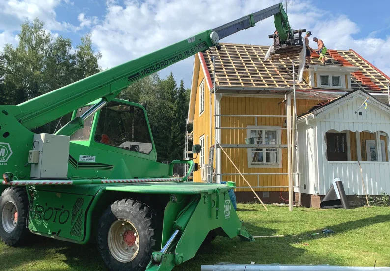

Nybyggnation
Från första skiss och projektering till en nyckelfärdig villa.
Läs merFrån mindre reparationer till en nyckelfärdig villa. Här hittar du våra tjänster och hur vi kan hjälpa dig.
Från första skiss och projektering till en nyckelfärdig villa.
Läs mer
Nya rum, nytt tak eller nya fönster. Vi tar hand om helheten.
Läs mer
Egna elektriker för både byggprojekt, service och fristående uppdrag.
Läs mer
Grävning, markarbete och lyft med vår egen maskinpark.
Läs merTydlig planering och rätt yrkespersoner i rätt skede.
Berätta vad du vill göra. Ju tidigare vi kommer in, desto mer kan vi bidra med i planeringen.
Vi samordnar bygg, el och de andra yrkesgrupper som behövs. Du får en tidplan för projektet.
Från mark och stomme till installationer och detaljer. Vi tar ansvar för det vi har kommit överens om.
Berätta om din idé, så pratar vi om nästa steg.